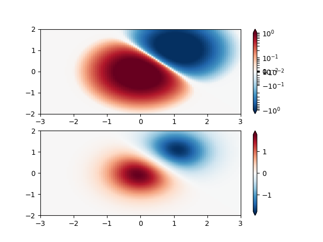

Note
Click here to download the full example code
Colormap Normalizations Symlognorm¶
Demonstration of using norm to map colormaps onto data in non-linear ways.
Out:
/root/matplotlib/examples/userdemo/colormap_normalizations_symlognorm.py:30: MatplotlibDeprecationWarning: shading='flat' when X and Y have the same dimensions as C is deprecated since 3.3. Either specify the corners of the quadrilaterals with X and Y, or pass shading='auto', 'nearest' or 'gouraud', or set rcParams['pcolor.shading']. This will become an error two minor releases later.
pcm = ax[0].pcolormesh(X, Y, Z,
/root/matplotlib/examples/userdemo/colormap_normalizations_symlognorm.py:36: MatplotlibDeprecationWarning: shading='flat' when X and Y have the same dimensions as C is deprecated since 3.3. Either specify the corners of the quadrilaterals with X and Y, or pass shading='auto', 'nearest' or 'gouraud', or set rcParams['pcolor.shading']. This will become an error two minor releases later.
pcm = ax[1].pcolormesh(X, Y, Z, cmap='RdBu_r', vmin=-np.max(Z))
import numpy as np
import matplotlib.pyplot as plt
import matplotlib.colors as colors
"""
SymLogNorm: two humps, one negative and one positive, The positive
with 5-times the amplitude. Linearly, you cannot see detail in the
negative hump. Here we logarithmically scale the positive and
negative data separately.
Note that colorbar labels do not come out looking very good.
"""
N = 100
X, Y = np.mgrid[-3:3:complex(0, N), -2:2:complex(0, N)]
Z1 = np.exp(-X**2 - Y**2)
Z2 = np.exp(-(X - 1)**2 - (Y - 1)**2)
Z = (Z1 - Z2) * 2
fig, ax = plt.subplots(2, 1)
pcm = ax[0].pcolormesh(X, Y, Z,
norm=colors.SymLogNorm(linthresh=0.03, linscale=0.03,
vmin=-1.0, vmax=1.0, base=10),
cmap='RdBu_r')
fig.colorbar(pcm, ax=ax[0], extend='both')
pcm = ax[1].pcolormesh(X, Y, Z, cmap='RdBu_r', vmin=-np.max(Z))
fig.colorbar(pcm, ax=ax[1], extend='both')
plt.show()
Keywords: matplotlib code example, codex, python plot, pyplot Gallery generated by Sphinx-Gallery